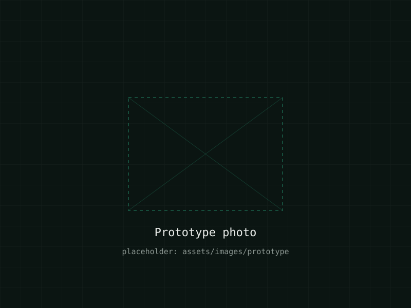
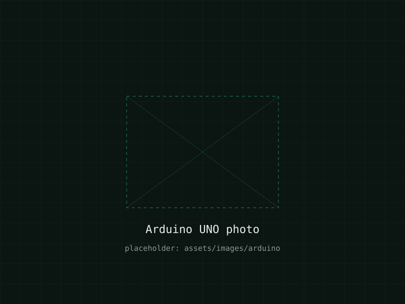
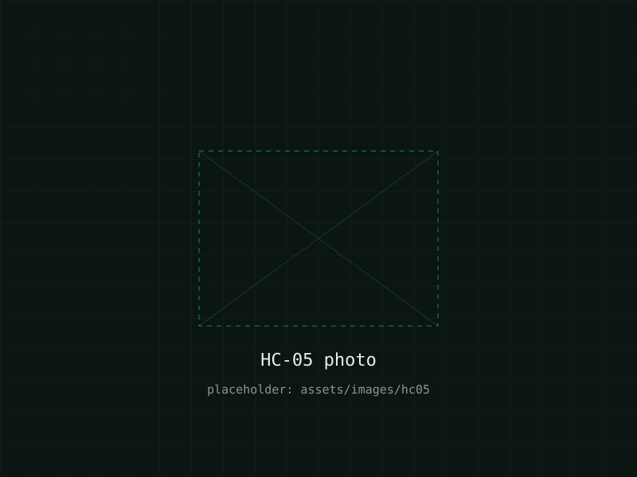
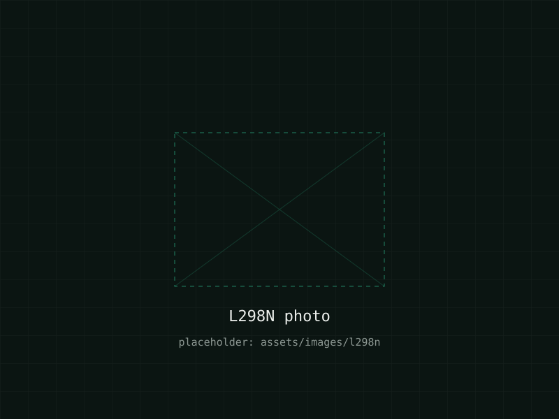
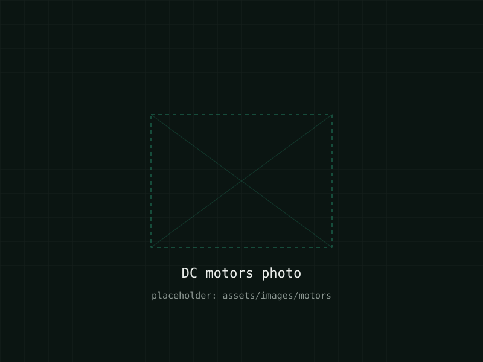
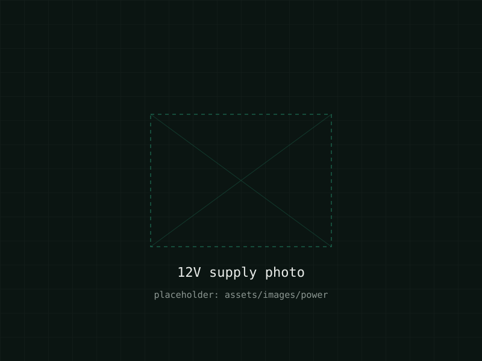

Hands-free control
Smartphone voice commands reduce dependence on manual wheelchair controls.
ARDUINO-BASED ASSISTIVE MOBILITY SYSTEM
An Arduino-based assistive mobility system that translates smartphone voice commands into wheelchair movement using Bluetooth communication and motor control.

THE PROBLEM
Conventional manual wheelchairs require physical effort to operate and can be difficult for users with limited upper-body mobility.
Objective: to develop a low-cost voice-controlled wheelchair prototype that allows basic wheelchair movement to be controlled using spoken commands from a smartphone.
Smartphone voice commands reduce dependence on manual wheelchair controls.
Built using accessible and readily available Arduino-based electronics.
Designed to explore more accessible methods of controlling personal mobility.
SYSTEM ARCHITECTURE
User speaks a command into the smartphone.
The smartphone converts speech into a predefined movement command.
The HC-05 module transmits the command wirelessly.
Arduino UNO receives and interprets the command.
The L298N motor driver controls the DC motors.
The prototype executes the requested movement.
"Forward"Move forward"Backward"Move backward"Left"Turn left"Right"Turn right"Stop"Stop motorsSYSTEM COMPONENTS

Role: Main microcontroller
Receives serial commands from the Bluetooth module, interprets movement instructions and controls motor-driver signals.

Role: Wireless communication
Provides serial Bluetooth communication between the smartphone and Arduino.

Role: Motor control
Dual H-bridge motor driver used to control motor direction and movement.

Role: Wheel movement
Drive the left and right wheels of the prototype.

Role: Prototype power source
Supplies the motor system of the prototype.
CONTROL LOGIC
FUNCTIONAL VERIFICATION
| Command | Expected result | Test result |
|---|---|---|
| Forward | Both motors drive forward | Passed |
| Backward | Both motors reverse | Passed |
| Left | Direction adjusted for left turn | Passed |
| Right | Direction adjusted for right turn | Passed |
| Stop | Motors stop | Passed |
These are preliminary prototype tests carried out indoors. They are not certified safety results.
FUTURE WORK
None of the items below are implemented in the current prototype.
Ultrasonic sensors could identify nearby obstacles.
Dedicated physical emergency-stop mechanism.
Location monitoring for future prototypes.
Real-time battery-level information.
More robust command recognition.
Dedicated interface for control and system status.
Optional remote telemetry.
Long-term exploration of assisted navigation.
THE PEOPLE
25WU0102264
25WU0102330
25WU0104024
25WU0102274
View the source code, documentation and development files for the Voice-Controlled Wheelchair project.
View on GitHub